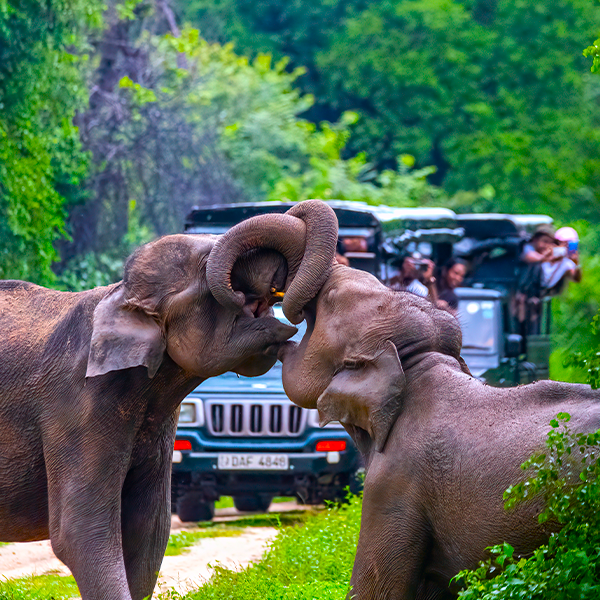
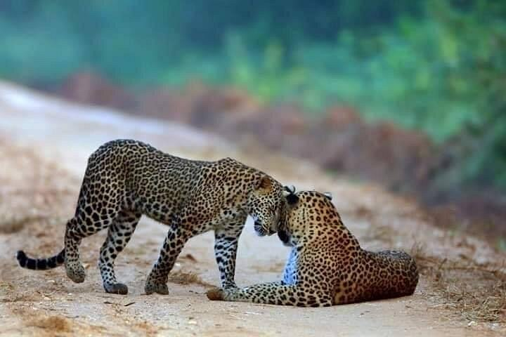
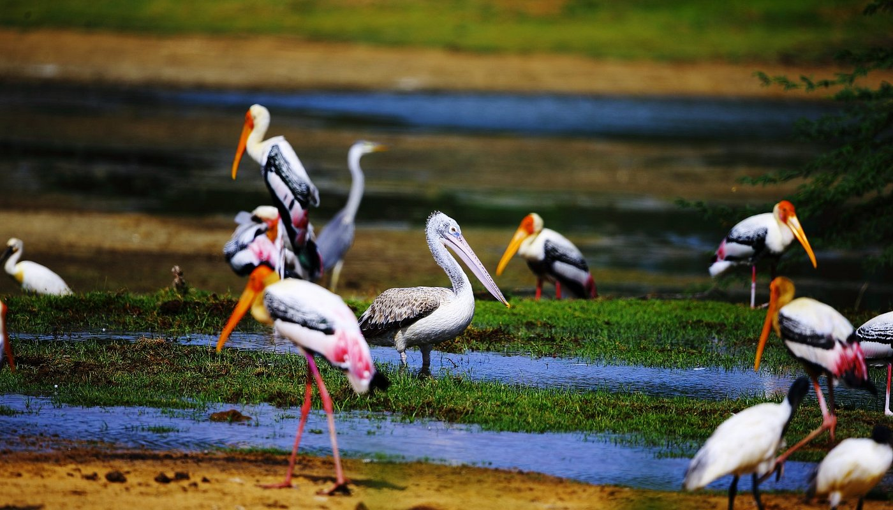
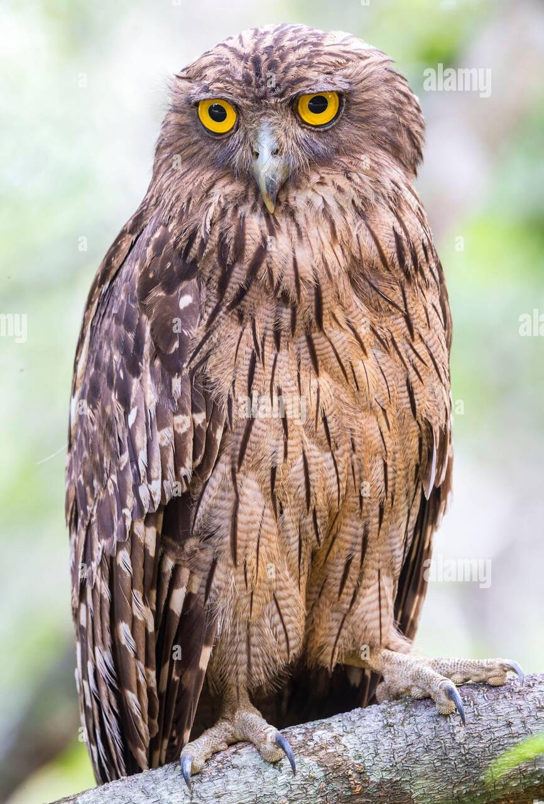
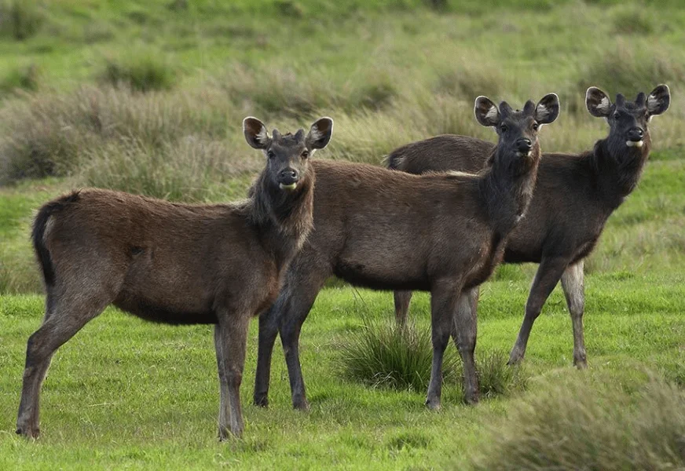
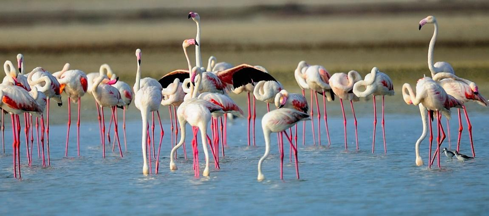
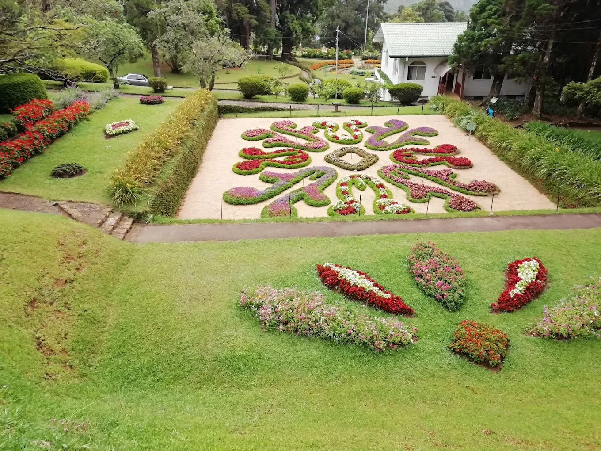
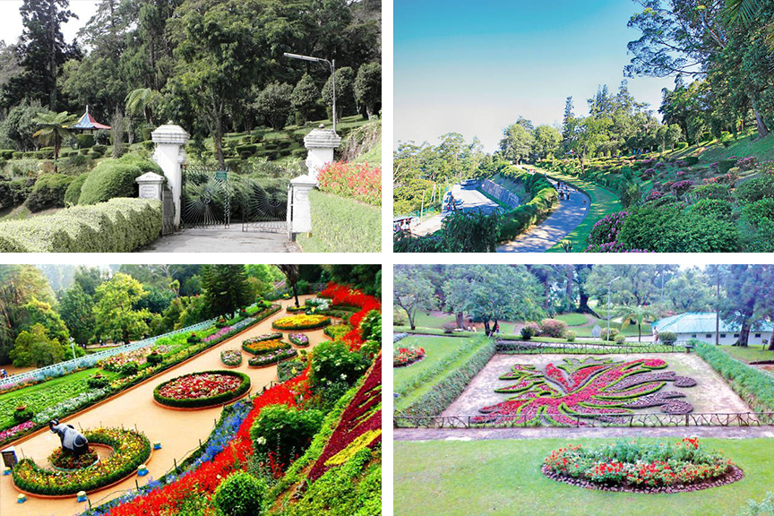

Welcome to Wild & Green, your ultimate guide to the breathtaking natural treasures of Sri Lanka. Known for its rich biodiversity and lush tropical beauty, Sri Lanka offers a rare blend of wild adventure and peaceful greenery. From the dense forests of Yala and Wilpattu, where elusive leopards and mighty elephants roam, to the highland plains of Horton Plains with its dramatic cliffs and rare flora, the island's national parks are a paradise for wildlife lovers and explorers. But nature's wonders don't stop with the wild. Sri Lanka's botanical gardens-from the historic Peradeniya Gardens in Kandy to the cool-climate beauty of Hakgala near Nuwara Eliya-showcase thousands of plant species, flowering trees, and medicinal herbs. These gardens are living museums, carefully preserved and beautifully maintained, offering peaceful paths for anyone who loves nature, photography, or just a quiet escape. Whether you're planning your next eco-tourism adventure, a scenic getaway, or a family trip into nature, Wild & Green gives you all you need to know. Browse our detailed park and garden guides, explore stunning image galleries, and learn about the unique ecosystems that make Sri Lanka one of the most bio-diverse islands in the world. Discover the wild. Breathe the green. Experience Sri Lanka, naturally.

|

|
Yala is the most famous national park in Sri Lanka and is renowned for having one of the highest leopard densities in the world. It features dry woodlands, scrub jungle, lagoons, and rocky outcrops. In addition to leopards, Yala is home to elephants, sloth bears, crocodiles, and over 200 bird species.

|
 |
Famous for its large elephant population, Udawalawe offers a great open landscape with grasslands and forests. It's one of the best parks for close-up sightings of elephants in the wild. The park also supports water buffalo, sambar deer, and many bird species.
.jpg)
|
 |
The largest national park in Sri Lanka, Wilpattu is known for its unique "willus" - natural lakes surrounded by thick jungle. It's ideal for spotting leopards, sloth bears, and birds in a tranquil, less crowded environment.
|  |  |
Located adjacent to Yala, Kumana is a haven for bird lovers. It's famous for its large flocks of nesting water birds, such as painted storks, egrets, and pelicans, especially during the migratory season.

|
 |
This UNESCO World Heritage Site is known for its cool climate, misty grasslands, cloud forests, and dramatic escarpments. The main attraction is "World’s End," a sheer cliff drop. It is also home to sambar deer, montane birds, and rare plants.
|  |

|
A designated Ramsar Wetland and bird sanctuary, Bundala attracts thousands of migratory birds, including flamingos. Its salt pans, lagoons, and sand dunes provide a beautiful, coastal wildlife habitat.
|  |  |
The largest and most iconic garden in Sri Lanka, Peradeniya is famous for its elegant palm avenues, orchid collection, giant fig tree, and over 4,000 species of plants. It's a favorite for both locals and tourists.